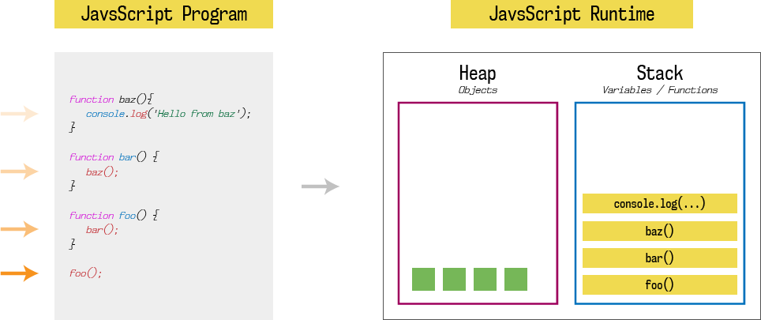
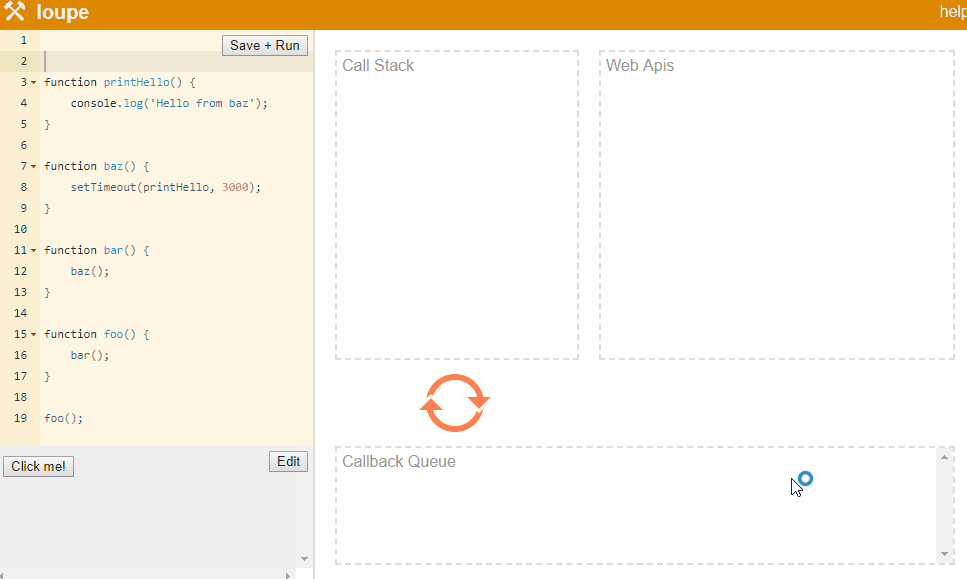

Çalışma Yapısı ve Genel Mimari
Çoğumuz Google’un popüler Javascript Engine olan V8 engine duymuştur. B8 hem Chrome içinde hem de Node.js içinde kullanılır. Bu bölümde klasik bir Javascript Engine’in çalışma üzerinedir.
Klasik bir Javascript Engine iki ana bileşenden oluşur:
- Memory Heap: bellek tahsisinin gerçekleştiği yer
- Call Stack: Kodumuzun yürütüldüğü stack çerçevelerinin olduğu yer

HesapAynı zamanda “free store” olarak da bilinen heap, rasgele verileri saklamak için kullanılabilecek bellekteki büyük bir bölgedir. Bu yüzden çok daha yavaştır ve klasik dillerdeki C gibi veri yapıları için kullanılır. Heap problemi Bilgisayar bilimlerinin temel problemlerindendir. İşlemleri yaparken heap verilerini hızlıca bulmak için, üzerine bir işaretçi stack’te depolanır
StackStack, İlk Giren Son Çıkar (FILO) modunda çalışan, bellekteki bir bölgedir. Yeni bir iş parçacığı bir bilgisayar programı tarafından başlatıldığında (genellikle önce ana iş parçacığı çalışır), yeni bir stack oluşturulur. Küçüktür ve geçici verileri hızla depolamak ve almak için kullanılabilir. Stack, hızlı kalmasını ve yığın taşmasını engellemek için genellikle düşük maliyetli veriler için kullanılır. Basit veri türleri (integer, float, pointer … gibi) ve fonksiyonlar bunlara örnek gösterilebilir. Alttaki şekil, birbirini çağıran fonksiyonların stackta tutulmasına bir örnektir.

Bu örnekte foo ana fonksiyondur. foo->bar->baz->console.log fonksiyonunu çağırır. Burada foo’nun çıktı üretebilmesi için son giren ilk çıkar mantığına göre çalışma söz konusudur. Stack’teki her bir fonksiyona Stack çerçevesi de denir.
Javascript single-threaded’tir, bir stack ve bir heap’e sahiptir. Bu sebepten dolayı bir programı çalıştırdığınızda o program içinde bir fonksiyon gerçekleşmeden diğer fonksiyonlara geçmez. Aslında böyle olması da mantıklıdır. Multi-threaded bir yapı da olsa idi, sorun yaratırdı. Örneğin, internet gibi bir ortamda A ve B fonksiyonları olsun ve karşıdan yüklensinler. B, A’dan veri bekleyen bir fonksiyon olsun. Eğer ilk B biterse ve çalışırsa A veri üretmediği için sorun çıkar. Burada stack sınırlıdır. Eğer birbirini çağıran fonksiyonlar sonsuz döngüye girerse “Maximum call stack size exceeded” hatasını alırsınız.
Bir web sayfası isteği yaptığımızda sadece yukarıdaki bölümler oluşmaz. Klasik bir Javascript Engine (örneğin V8) aşağıdaki gibi bir yapı oluşturur.

Javascript Runtime, event loop ve callback kuğruğu adında iki bileşen daha içerir. Call back kuyruğuna, message kuyruğu veya task kuyruğu da denir. Örneğin, tarayıcı da büyük bir problem çalıştırdık, (örneğin resim çözme işlemi) stack kullanımı artıyor (stack’te yer kalmazsa hata verir) fakat bu sırada tarayıcı kullanmaya devam etmek istiyoruz. Burada çözüm olarak asenkron callbacks kullanılmıştır. Callback bir web sayfasında WEB APIs denilen AJAX ve DOM gibi birçok bileşeni içeren bir yapıdan oluşur. DOM HTML etiketlerinin bir ağaç ilişkisi şeklinde tutulduğu kısımdır. AJAX ise web sayfasına dışarıdan veri getirmek veya göndermek için kullanılır. Burada, HTTP isteği gönderme, DOM’u dinleme, setTimeout veya setInternal kullanarak çalıştırmayı geciktirme, veri toplama ve daha fazlası WEB APIs üzerinden gelir. Web APIs’leri asenkron çalışır. Bu yapı sayesinde örneğin üç button’a sırayla tıklayıp ayrı üç istek oluşturma şansımız vardır. Aslında callback ve stack tarafında işlemler senkron çalışır. Ancak, ilk tıkladığımız button’un sonucu ilk gelecektir diye bir kural yoktur. Asenkron şekilde sonuçlar gelir, son tıklamanında sonucu ilk yazılabilir. Sunucu tarafında da işin maliyeti önem kazanmıştır. Aslında her istek bir callback function üretmiştir. Bunlarda callback kuyruğuna alınır. Tabii callback fonksiyonu da direkt çalışmaz, stack’e yüklenir ve ardından çalışır. Burada yükleme işinden sorumlu kısım event loop bileşenidir. Kuyruktan sıradaki elemanı alır ve stack’e yükler. Stack empty olmadığı sürece diğer callback fonksiyonuna geçilmez. Dikkat edildiyse asenkron bir yapıdan tekrar senkron bir yapıya geçilmiştir.
Bu konuda Philip Roberts Javascript çok güzel anlatan bir araç yapmıştır. Bu araçtan alınan çıktı örneği aşağıdaki gibidir. Kendi kodlarınızı da bu çıktı örneği üzerinde çalıştırabilirsiniz. Ayrıca, Philip Roberts’ın bu konu da güzel bir sunumu da vardır. Bu sunumda verilen diğer kod örneklerini incelemenizi öneririm.

Node.js çok benzer bir yapıya sahip fakat bazı kısımlarda iyileştirmeler yapılmıştır. Örneğin C’de yazılmış libuv kütüphanesi sayesinde event loop mekanizması iyileştirilmiştir. Callback kısmı ise tarayıcı üzerindeki benzer çalışır.